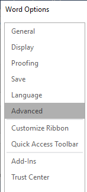
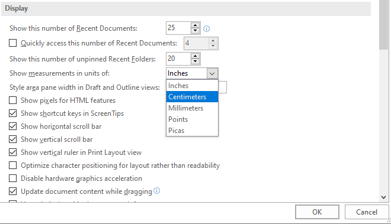
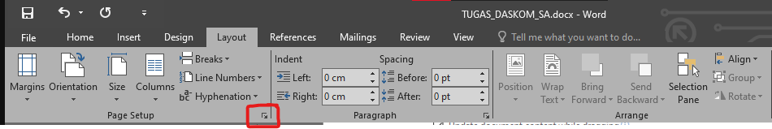
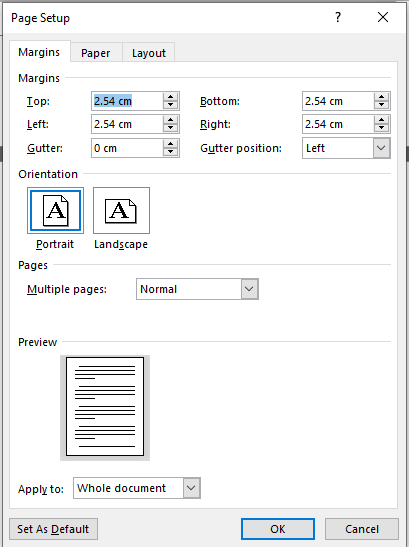
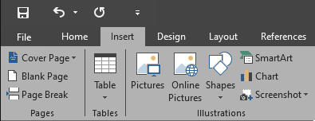
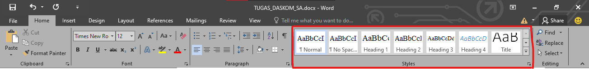
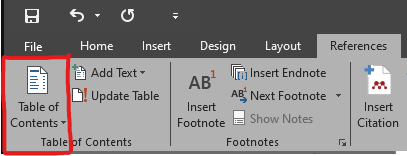

NIM : A11.2021.13554 - FARIS DZULFIQAR
Selasa, 10 Agustus 2022
Selasa, 10 Agustus 2022
membahas tentang membuat daftar isi otomatis, daftar tabel, daftar tabel, daftar gambar, dan penomoran halaman,sebelum pembuatan daftar isi otomatis kita harus mengubah ukuran pengukuran
yang dari inch ke cm agar mudah di atur dengan cara masuk ke tab file - > option -> advance

Kemudian pilih di bagian display pilih di bagian show measurement in unit of yang dari inches ke centimeters agar gampang di mengerti

Kemudian untuk mengatur ukuran halam kita pilih di bagian layout , page setup
kemudian kita klik bagian pojok kanan bawah (lingkaran merah)

Kemudian kita atur sesuai kebutuhan , jangan lupa untuk mengatur apply to di bagian bawah page set up ke halaman document yang kita perlukan

Untuk pembuat daftar isi otomatis kita bisa membuat tulisan daftar isi ,
kemudian kita klik ke tab insert pilih di bagian page break untuk membuat halaman baru tanpa harus menggunakan tombol enter .

Kemudian untuk membuat halaman dalam daftar isi , kita bisa klik heading 1 untuk membuat BAB (bagian isi buku) dan heading 2 untuk membuat sub-BAB .

Kita bisa mengatur/modify setiap heading yand kita gunakan dengan cara klik kanan pada tab heading 1 atau heading 2 .
Dan kita juga bisa mengatur untukfont yang akan di gunakan setiap heading yang kita gunakan
Langkah selanjutnnya untuk membuat daftar isinya kita perlu yang namanya table of content di tab bagian refrence

Kegunaan dari table of content untuk menyususn bentuk dar daftar isi yang akan kita buat
Dan kita juga bisa meng-custom untuk tampilan yang akan di buat
2
3
4
5
6
7
8
9
10
11
12
13
14
15
16